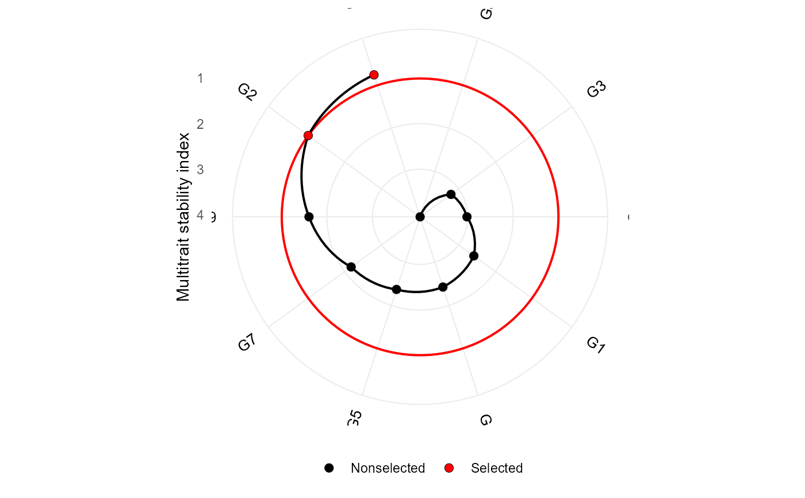

Makes a radar plot showing the multitrait stability index proposed by Olivoto et al. (2019)
Usage
# S3 method for class 'mtsi'
plot(
x,
SI = 15,
type = "index",
position = "fill",
genotypes = "selected",
title = TRUE,
radar = TRUE,
x.lab = NULL,
y.lab = NULL,
size.point = 2.5,
size.line = 0.7,
size.text = 3.5,
width.bar = 0.75,
n.dodge = 1,
check.overlap = FALSE,
invert = FALSE,
col.sel = "red",
col.nonsel = "black",
legend.position = "bottom",
...
)Arguments
- x
An object of class
mtsi- SI
An integer (0-100). The selection intensity in percentage of the total number of genotypes.
- type
The type of the plot. Defaults to
"index". Usetype = "contribution"to show the contribution of each factor to the MGIDI index of the selected genotypes.- position
The position adjustment when
type = "contribution". Defaults to"fill", which shows relative proportions at each trait by stacking the bars and then standardizing each bar to have the same height. Useposition = "stack"to plot the MGIDI index for each genotype.- genotypes
When
type = "contribution"defines the genotypes to be shown in the plot. By default (genotypes = "selected"only selected genotypes are shown. Usegenotypes = "all"to plot the contribution for all genotypes.)- title
Logical values (Defaults to
TRUE) to include automatically generated titles.- radar
Logical argument. If true (default) a radar plot is generated after using
coord_polar().- x.lab, y.lab
The labels for the axes x and y, respectively. x label is set to null when a radar plot is produced.
- size.point
The size of the point in graphic. Defaults to 2.5.
- size.line
The size of the line in graphic. Defaults to 0.7.
- size.text
The size for the text in the plot. Defaults to 10.
- width.bar
The width of the bars if
type = "contribution". Defaults to 0.75.- n.dodge
The number of rows that should be used to render the x labels. This is useful for displaying labels that would otherwise overlap.
- check.overlap
Silently remove overlapping labels, (recursively) prioritizing the first, last, and middle labels.
- invert
Logical argument. If
TRUE, rotate the plot.- col.sel
The colour for selected genotypes. Defaults to
"red".- col.nonsel
The colour for nonselected genotypes. Defaults to
"black".- legend.position
The position of the legend.
- ...
Other arguments to be passed from
ggplot2::theme().
References
Olivoto, T., A.D.C. Lúcio, J.A.G. da silva, B.G. Sari, and M.I. Diel. 2019. Mean performance and stability in multi-environment trials II: Selection based on multiple traits. Agron. J. (in press).
Author
Tiago Olivoto tiagoolivoto@gmail.com
Examples
# \donttest{
library(metan)
mtsi_model <- waasb(data_ge, ENV, GEN, REP, resp = c(GY, HM))
#> Evaluating trait GY |====================== | 50% 00:00:01
Evaluating trait HM |============================================| 100% 00:00:02
#> Method: REML/BLUP
#> Random effects: GEN, GEN:ENV
#> Fixed effects: ENV, REP(ENV)
#> Denominador DF: Satterthwaite's method
#> ---------------------------------------------------------------------------
#> P-values for Likelihood Ratio Test of the analyzed traits
#> ---------------------------------------------------------------------------
#> model GY HM
#> COMPLETE NA NA
#> GEN 1.11e-05 5.07e-03
#> GEN:ENV 2.15e-11 2.27e-15
#> ---------------------------------------------------------------------------
#> All variables with significant (p < 0.05) genotype-vs-environment interaction
mtsi_index <- mtsi(mtsi_model)
#>
#> -------------------------------------------------------------------------------
#> Principal Component Analysis
#> -------------------------------------------------------------------------------
#> # A tibble: 2 × 4
#> PC Eigenvalues `Variance (%)` `Cum. variance (%)`
#> <chr> <dbl> <dbl> <dbl>
#> 1 PC1 1.37 68.5 68.5
#> 2 PC2 0.631 31.5 100
#> -------------------------------------------------------------------------------
#> Factor Analysis - factorial loadings after rotation-
#> -------------------------------------------------------------------------------
#> # A tibble: 2 × 4
#> VAR FA1 Communality Uniquenesses
#> <chr> <dbl> <dbl> <dbl>
#> 1 GY 0.827 0.685 0.315
#> 2 HM 0.827 0.685 0.315
#> -------------------------------------------------------------------------------
#> Comunalit Mean: 0.6846623
#> -------------------------------------------------------------------------------
#> Selection differential for the waasby index
#> -------------------------------------------------------------------------------
#> # A tibble: 2 × 6
#> VAR Factor Xo Xs SD SDperc
#> <chr> <chr> <dbl> <dbl> <dbl> <dbl>
#> 1 GY FA 1 48.3 86.4 38.0 78.7
#> 2 HM FA 1 58.3 79.2 21.0 36.0
#> -------------------------------------------------------------------------------
#> Selection differential for the mean of the variables
#> -------------------------------------------------------------------------------
#> # A tibble: 2 × 11
#> VAR Factor Xo Xs SD SDperc h2 SG SGperc sense goal
#> <chr> <chr> <dbl> <dbl> <dbl> <dbl> <dbl> <dbl> <dbl> <chr> <dbl>
#> 1 GY FA 1 2.67 2.98 0.305 11.4 0.815 0.249 9.31 increase 100
#> 2 HM FA 1 48.1 48.4 0.265 0.551 0.686 0.182 0.378 increase 100
#> ------------------------------------------------------------------------------
#> Selected genotypes
#> -------------------------------------------------------------------------------
#> G8 G3
#> -------------------------------------------------------------------------------
plot(mtsi_index)

# }